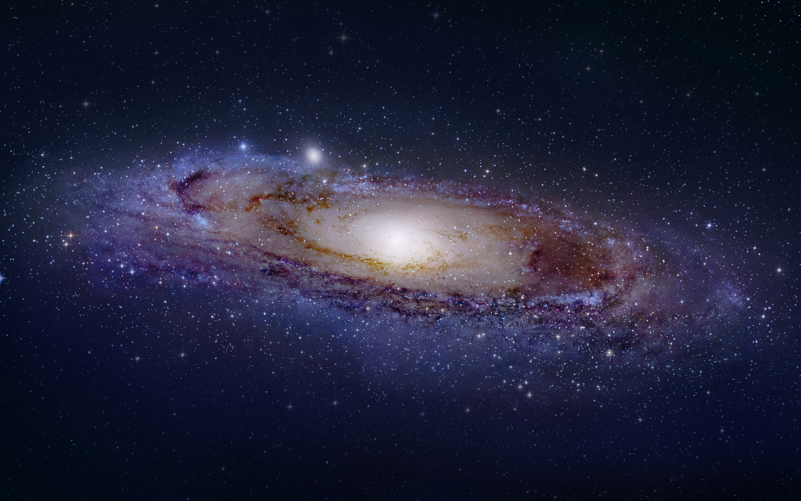
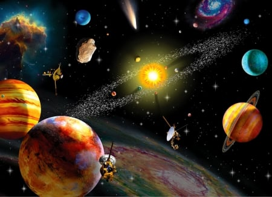
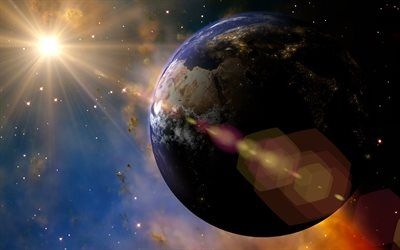

Chamamos de universo o espaço com toda a matéria e toda a energia existentes nele. Já cosmologia é o termo que designa os estudos a respeito da origem, estrutura, evolução e das partes que compõem esse universo. A teoria mais aceita atualmente para explicar como o universo se formou é a do Big Bang, uma expressão em inglês que pode ser traduzida como “Grande Explosão”. Esse pensamento é baseado na Teoria da Relatividade de Albert Einstein e de estudos na área de astronomia conduzidos por Edwin Hubble e Milton Humason. De acordo com esses cientistas, as galáxias estão se afastando umas das outras, ou seja, o universo está em uma expansão constante. Por isso, o mais provável é que no passado, estivesse concentrado em um ponto. De acordo com eles, o que hoje chamamos de universo teria surgido há muito tempo, entre 10 e 20 bilhões de anos (o número mais preciso é 13,7 bilhões de anos), a partir de uma grande explosão que consistiu, basicamente, em uma liberação imensa de energia. Depois da explosão, quando o universo se expandiu, ele entrou em um processo de resfriamento e aproximadamente um milhão de anos após o Big Bang, a matéria e a energia puderam se separar. E estima-se que um bilhão de anos depois dessa explosão que deu origem ao universo, os elementos químicos começaram a se combinar uns com os outros, o que teria começado a formar as galáxias.
As galáxias são aglomerados em forma de espiral, de estrelas, meteoróides, planetas e diversos outros corpos espaciais parecidas com a Via Láctea, a galáxia que abriga o sistema solar onde nos encontramos. A partir daí, o próprio Hubble classificou as galáxias de acordo com sua forma em: elípticas, espirais e espirais barradas. As que não apresentam uma forma definida são chamadas de irregulares, mas de acordo com a classificação de Hubble, estão em uma quarta categoria à parte. As espirais, formadas por um núcleo, um disco, um halo, e braços espirais, são dividias em Sa, Sb e Sc. As Sa têm um núcleo bem definido e grande, braços pequenos e bem enrolados que quase não se vê; as Sb têm núcleo e braços intermediários (forma típica de espiral, como a Via Láctea); e as Sc têm o núcleo pequeno e braços bem abertos, mais parecidos com um “S” ao invés de uma espiral. Algumas galáxias não têm os tais braços em espiral e são chamadas de lenticulares ou “SO” que, juntas formam o conjunto das galáxias discoidais. Normalmente estas galáxias espirais são compostas por material interestelar, nebulosas gasosas, estrelas jovens e velhas e poeira.


O Planet Terra
✯ Cerca de 70% dele é feito de água e 30% de terra.
✯ A cada 100 anos a rotação da terra perde cerca de 17 milisegundos.
✯ Unico planeta que possui a água em estado líquido.
✯ Atmosfera rica em oxigênio e nitrogênio.
✯ Unico planeta do sistema solar que não possui nome de um deus romano, no latim "terra" significa "solo".
✯ É um grande e potente campo magnético gracças ao seu núcleo composto de ferro e magnésio.
✯ Ela é o planeta mais denso so sistema solar.
✯ As águas dos oceanos refletem fora do planeta.
✯ A menor temperatura já registrada foi de (-87 graus celsius).
✯ Para saber mais sobre a Terra clique Aqui
O que é AIML?
O AIML (Artificial Intelligence Markup Language) é um conjunto de tags
XML (eXtensible Markup Language) capaz de representar e relacionar expressões
em linguagem natural, permitindo a criação de motores robóticos capazes de manter
um diálogo simples.